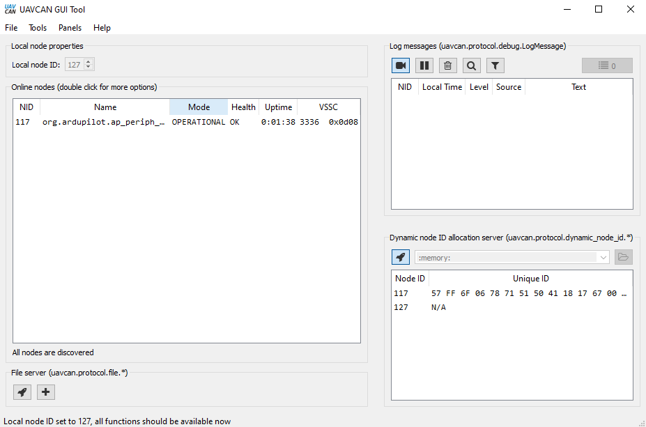
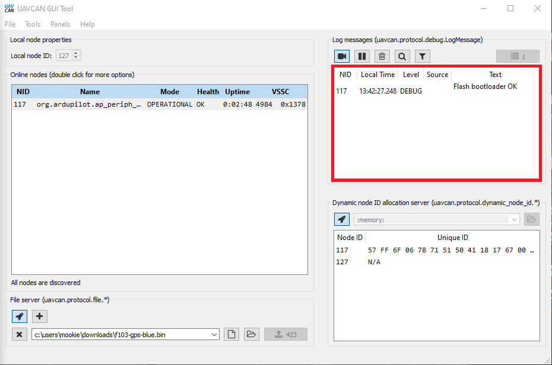
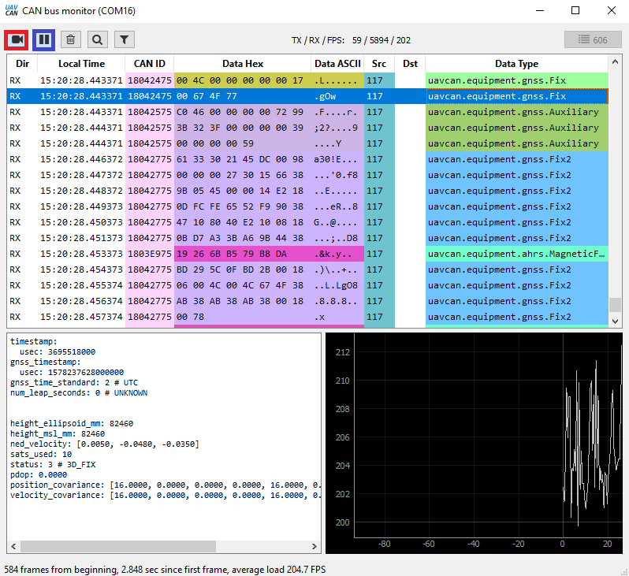

DroneCAN GUI¶
DroneCAN_GUI is a tool that allows viewing, configuration and software updates of nodes connected to the BUS.
Windows: Download DroneCAN_GUI and install.
Linux: python3 -m pip install dronecan_gui_tool dronecan
Before the autopilot can be connected, SLCAN mode must be operational. See SLCAN Access on F4 based Autopilots or SLCAN Access on F7/H7 Based Autopilots for setup information.
Start DroneCAN GUI and select the correct USB port for the SLCAN interface. The default CAN bus bit rate of 1,000,000 wont need to be changed unless the CAN_P1_BITRATE or CAN_P2_BITRATE (if using the second autopilot CAN port) has been changed. The Adapter baud rate should match the autopilot’s SERIALx port baud rate. The default value of 115.2KBaud should be correct.
Note
Almost all ArduPilot autopilots use VCP USB connections and Adapter port baud rate value is irrelevant and can be any value.
DroneCAN_GUI tool will start with an interface as the image below. Click on tick box next to Local node ID. Leave it unchanged, unless you have another node on the CANBUS with the same address.
If the node has a bootloader only installed, then firmware will need to be
uploaded. MAINTENANCE will be displayed. Firmware can be found here and downloaded for the node. Click on the button lower right and then double click on org.ardupilot.ap_periph as highlighted.
The following pop up window will appear. Click on update firmware and select the correct file for the node connected.
Note
If you have trouble updating firmware, trying renaming the firmware filename to something very short, such as “a.bin”. Longer filenames sometimes have difficulty loading.
Once the firmware has finished uploading to node the main window will change to OPERATIONAL as per image below. Press the Fetch All button, and double click on the FLASH_BOOTLOADER parameter and enter 1 in the highlighted box. Press Send and close the dialog. The address of the node can be changed in this window to avoid conflict with another node on the CANBUS, as well as any DroneCAN device specific parameters.
A debug message will show complete.
Messages coming through the CANBUS can be viewed using the bus monitor tool in “Tools” menu.
To return to normal operation, close the DroneCAN_GUI tool.